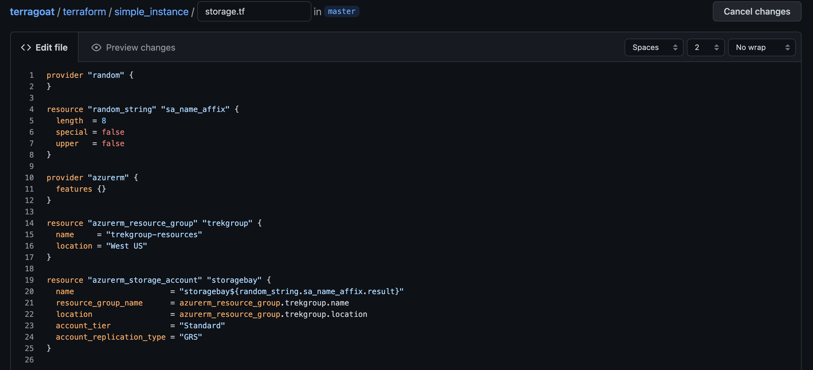
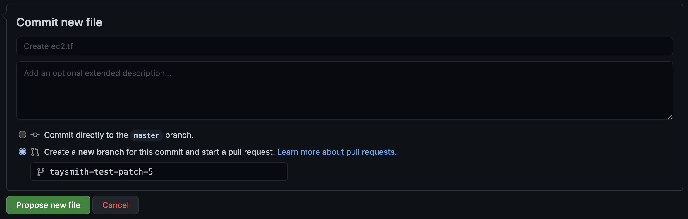
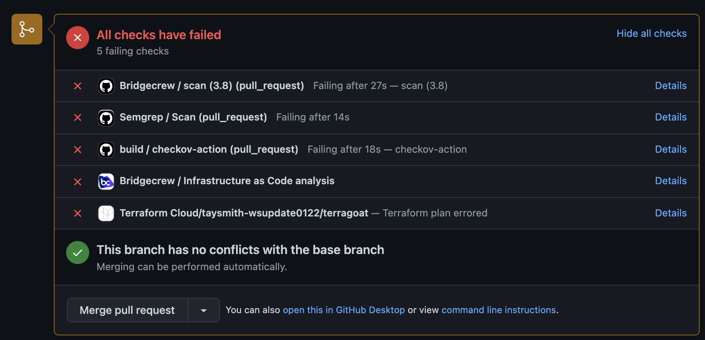
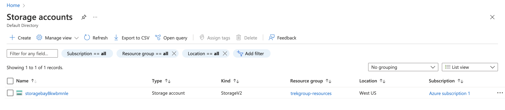

Check that all three integrations are working by kicking off a pull request. Go back to your fork of the TerraGoat repo and select “Add file” -> “Create new file.” Set the path to terraform/simple_instance/storage.tf. Add the following code:
provider "random" {
}
resource "random_string" "sa_name_affix" {
length = 8
special = false
upper = false
}
provider "azurerm" {
features {}
}
resource "azurerm_resource_group" "trekgroup" {
name = "trekgroup-resources"
location = "West US"
}
resource "azurerm_storage_account" "storagebay" {
name = "storagebay${random_string.sa_name_affix.result}"
resource_group_name = azurerm_resource_group.trekgroup.name
location = azurerm_resource_group.trekgroup.location
account_tier = "Standard"
account_replication_type = "GRS"
}
Select “Create a new branch” and “Propose new file.”

Then “Create a pull request.” After a few seconds, you should automatically see Code Review Comments. Expand one to see the additional details like Fix recommendations. At the bottom, you should see five checks:

If you added the Yor GitHub Action, you will see that kick off and all of your resources will be tagged by Yor.
You can fix the violations later, but for now, click “Merge pull request” and “Confirm merge.”
If you added the Terraform Cloud integration - Head back over to Terraform Cloud and select the latest run. You’ll again see the policy violations, but since we set the failure level to “advisory (logging only),” we can still apply the template.
We’re using a free resource (Storage Account), but remember to cleanup with terraform destroy at the end to avoid additional charges from Azure.
Click “Confirm & Apply.” This will deploy the empty Storage Account. If you have the Yor GitHub Action, you may have to select that run as well and click “Confirm & Apply.”
Alternatively, locally you can run git pull origin master to update your local directory. Move to your simple_instance directory in your terminal (cd terraform/simple_instance from the terragoat directory). Then run terraform init to initialize your directory and terraform apply to create your Storage Account. Type yes and let Terraform provision your resources.
Optionally, head over to your Azure console to confirm a bucket was created.

You’ve now set up a GitHub Action, a GitHub Application, and either a Terraform Cloud integration or Yor to secure your Terraform templates.
In the next module, you’ll look at how to investigate and fix the issues arising from the automated scans, as well as providing more tips for integrating security into the developer workflow without causing friction.